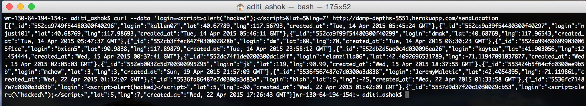
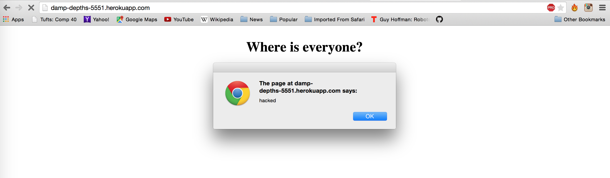
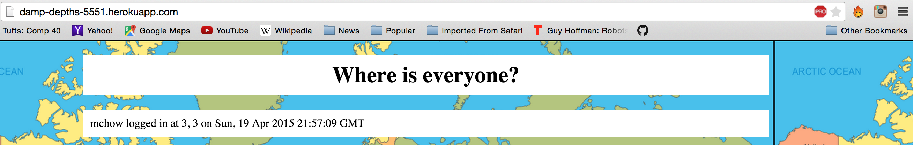
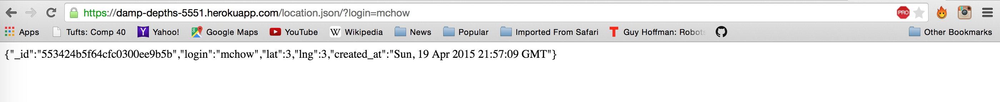
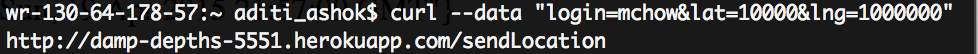
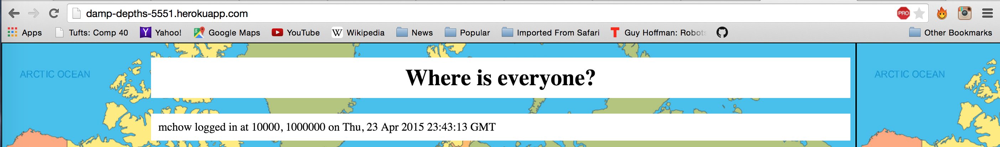
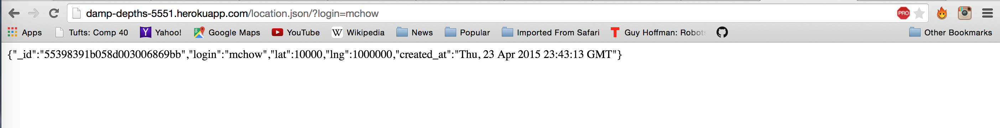
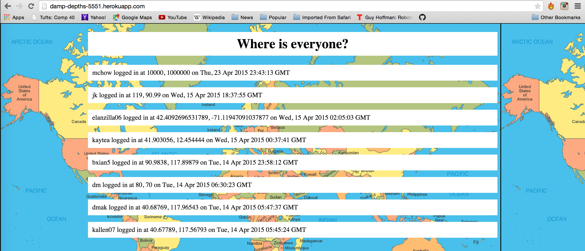

Security Assessment of the Real Marauder's Map Server
by Aditi Ashok
Introduction
This assignment tests the security of the
Marauder's Map web application server developed by
@kallen07 for
Comp20 Assignment 3. The Marauder's Map is a product that:
- Retrieves your current location and sends your current location to a datastore.
- Retrieves and displays the locations of people in the class on the map.
The initial stage of the Marauder's Map sent the user's location to a blackbox server created by
@mchow01. Then, kallen07, at her client's request, modified the project to send location to a server she had created.
For the purpose of this report, vulnerabilities will be defined as both places where the code can be broken and faults with the overall design of the project. Because the description of what kallen07 was asked to do do has many places for attack, I will delve into making the overall specifications more secure.
This report aims to find and assess the vulnerabilities in the server and the Marauder's Map that would make it unsafe for widespread use. I will aim to find vulnerabilities in the code itself, and not in the methods specified to create the project.
Methodology
First, "black-box" testing was carried out, meaning that attacks were made without viewing source code, using tools such as curl. Then, I reviewed the code for other vulnerabilities.
Abstract of Findings
One of the biggest security issues in this project is caused by not validating or checking if the input that the user provides for fields such as their log in name is correct. If the information passed in to the website is not correct, it is possible for an attacker to change the code of the website by putting in faulty input to cause an annoying popup, redirect the page, or more. The rest of the vulnerabilities in this page stem from the lack of privacy of the data passed into this object. An outside user can not only access but also modify the data on the website if they know the login names, which is inherently a huge security and functionality risk.
Issues Found
1. Cross-Site Scripting (XSS)
Location
Affects both the POST and GET APIs. The incorrect data is sent through the POST API, but since a user can enter whatever data they want, it is in the GET API where the vulnerability can be taken care of.
Severity
High. Since the website is driven by user input, issues such as this one pose a high risk since one rogue user could cause the entire server to crash and thus cause people not to want to use the product.
Description of Issue
Since data sent via the POST API is not escaped, so if someone includes Javascript or HTML in place of a login name, it will automatically execute. Here is an example of injecting a script into the HTML code. As you can see, the request executed and the request is visible in the JSON returned.

Proof of Vulnerability
As you can see in the image below, the script has been injected into the server and the alert window saying "hacked" pops up when the page is loaded.

Resolution
To resolve the issue, input must be escaped before it enters the database. There are certain characters that are commonly interpreted as code and thus make web applications vulnerable to XSS. You can escape characters with HTML entity encoding to prevent a script, style, or event handler from executing. Some common characters to escape include:
- & -> & amp
- < -> & lt
- > -> & gt
- " -> & quot
ESAPI can be used to escape the HTML entity as follows:
String safe = ESAPI.encoder( ).encodeForHTML(request.getParameter("input"));
2. Modifying Existing Data
Location
Affects both the POST and GET APIs, since the field is changed using the POST API and the incorrect information is retreived through GET. Again, like I said above, the GET API is where this vulnerability should be resolved.
Severity
High. This is a major issue for the correctness of data. Users can modify position coordinates if they know the login, so they can modify the coordinates for any known log in name. Becuase of this, there is no way to know whether or not the data is actually correct.
Description of Issue
There is no way of preventing a user from sending data to modify the position coordinates for a user who's login is known, which is makes it impossible to tell whether or not the data is valid or has simply been tampered with by a user. This issue is demonstrated as follows.


Above are the logins made before my attempt to override them. The first image is the main page of the server and the second page is what is retrieved when a user queries for the login "mchow".
Proof of Vulnerability
Now, consider the following data I sent to the server. I sent the same login, mchow, with different coordinates.

Then, the following occured:


As you can see, the previous coordinates associated with the mchow username have been overwritten by the new coordinates I sent to the server.
Resolution
To resolve the issue, there must be a way of preventing the user from overwriting the data. This can be done in several different ways. Some ideas include:
- Storing all locations associated with a particular login. This will not prevent bad data from going through, but it will prevent valid data from being erased completely.
- Only allowing users to send input for a single username. That way, users cannot modify data that is not associated with their own username.
- Password protecting each login. By protecting the login with a password, users can only modify data that is associated with a password that they know. This will not make it impossible to hack, but will make the task significantly more difficult.
3. Unprotected Access to all Data
Location
This affects the GET API, since users can automatically view the locations of everyone who has sent their coordinates to the sever.
Severity
Low/Moderate. Although it is a privacy risk to allow data such as locations to be available to the public, most of the data has been encrypted under a false username so the actual identity of the person isn't generally revealed, it is still important to not give the public access to information they do not need access to. A security flaw like this could discourage a section of clients from using the product based on fear of others knowing their locations.
Description of Issue
By accessing the homepage of the application, anyone in the general public can see all the locations of anyone who's ever sent their location to the server. Here is a screenshot of the main page of the application:

Proof of Vulnerability
The screenshot above is proof that anyone, regardless of whether or not they have sent data to the server, is able to see all of the locations people have sent.
Resolution
To resolve the issue, there must be a way of protecting the page from unauthorized viewers. There are a few ways to go about this:
- Make the page password protected and to view all locations, you must enter a password given to those entrusted to view everything sent. But that leads to the question of how would you determine who is allowed to see the locations?
- The best way of resolving this insecurity is creating a password associated with each login and only allowing the person to view their own locations after entering their credentials. However, this would go against the purpose of the Marauder's Map, so in terms of maintaining the functionality of the product, the first option would be better.
- Perhaps then the best way of securing the data is allow users to choose whom they want to share their data with from a database of users, and only then users can only view the data that they have been personally authorized to view.
Conclusion
Insecurities such as vulnerability to XSS are easy to fix with a few additional verifiers, and will come at no additional cost to the users. However, this product needs a deeper fix that involves restructuring the API to not allow overwriting of valid data and perhaps includes deeper protection of the privacy of people's information. This would involve restructuring the API in order to handle these security restrictions and then thoroughly follow up and evaluate again for all possible insecurities. Such a process should not take more than a few hundred dollars (mostly for labor), but would greatly improve the structure and functionality of the Marauder's Map.